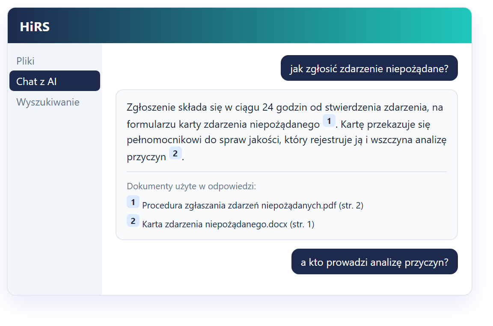

Hospital Information Retrieval System
Pytasz jak człowieka.
Odpowiada z Waszych
dokumentów.
Pracownik pyta zwykłym zdaniem. System odpowiada treścią z Waszych regulaminów i procedur — i wskazuje dokument oraz stronę.
Wszystko liczy się na urządzeniu w Waszej serwerowni. Żaden dokument, fragment ani pytanie nie opuszcza sieci szpitala.
Zgłoszenie składa się w ciągu 24 godzin od stwierdzenia zdarzenia, na formularzu karty zdarzenia niepożądanego 1. Kartę przekazuje się pełnomocnikowi do spraw jakości, który rejestruje ją i wszczyna analizę przyczyn 2.
Dokumenty użyte w odpowiedzi
Rozmowa i dokumenty na ilustracji są przykładowe.
01 — Problem
Wiedza jest w dokumentach.
Problemem jest droga do niej.
Cztery sytuacje, które w szpitalu powtarzają się codziennie — niezależnie od tego, jak dobrze prowadzona jest dokumentacja.
Nie wiadomo, która wersja obowiązuje
Dokument jest — tylko w którym folderze, i czy to na pewno tekst jednolity, a nie wersja sprzed dwóch aneksów?
Ta sama odpowiedź dziesiątki razy
Kadry i dział jakości tłumaczą w kółko to samo. Nowy pracownik pyta koleżankę, zamiast zajrzeć do regulaminu.
Przy akredytacji liczy się czas
Podczas kontroli znaczenie ma to, jak szybko docieracie do właściwego zapisu — nie to, że gdzieś go macie.
Chmura odpada
Dokumentacja szpitala nie może trafiać do zewnętrznego dostawcy. To zwykle zamyka temat narzędzi z internetu.
02 — Co dostajecie
Trzy drogi do dokumentu
Pracownik wybiera tę, która jest mu bliższa — nikogo nie zmuszamy do zmiany przyzwyczajeń.
Repozytorium — foldery, uprawnienia, statusy przetwarzania
Chat z AI — pytanie zwykłym językiem, odpowiedź z odnośnikami do stron
Wyszukiwarka po polach — „zarządzenia z 2024”, „procedury zatwierdzone przez…”
Automatyczne rozpoznawanie — rodzaj pisma, numer, data, osoba zatwierdzająca
Instrukcja obsługi — wbudowana w aplikację, pod przyciskiem Pomoc

03 — Bezpieczeństwo
Żaden dokument, fragment
ani pytanie nie opuszcza
Waszej sieci
Model językowy pracuje na urządzeniu stojącym w Waszej serwerowni. Nie ma połączenia z usługami zewnętrznymi — nie ma więc czego wysłać.
Wasza serwerownia
Dostęp do folderów nadawany rolom — użytkownik widzi tylko swoje, także w czacie.
Historia pytań prywatna; administrator widzi statystyki, nie cudze rozmowy.
Automatyczne wylogowanie po bezczynności, zmiana hasła za potwierdzeniem.
04 — Porównanie
HiRS a narzędzia chmurowe
Te same pytania, dwa różne modele działania. Różnica nie dotyczy jakości odpowiedzi, tylko tego, gdzie leżą Wasze dokumenty.
| HiRS — u Was w serwerowni | Asystent w chmurze | |
|---|---|---|
| Gdzie są dokumenty | Na dysku w Waszej serwerowni | Na serwerach dostawcy |
| Umowa powierzenia danych | Niepotrzebna — dane nie wychodzą | Wymagana, wraz z analizą ryzyka |
| Model rozliczenia | Sprzęt na własność + wsparcie | Abonament za użytkownika |
| Działa bez internetu | Tak | Nie |
| Wskazanie źródła odpowiedzi | Dokument i numer strony przy każdym zdaniu | Zależnie od narzędzia |
05 — Wiarygodność
Nie trzeba wierzyć systemowi —
każde zdanie sprawdzicie w źródle
Odpowiedź powstaje wyłącznie z fragmentów Waszych plików.
Brak dopasowania = jasny komunikat zamiast wymyślonej treści.
Widać też, ile dokumentów sprawdzono i z których nie skorzystano.
06 — Pojemność i szybkość
Baza rośnie,
czas odpowiedzi stoi w miejscu
Czasy pochodzą z pomiarów na działającym wdrożeniu. Przygotowanie nowego dokumentu trwa średnio ok. 60 sekund i odbywa się raz, w tle, przy wgraniu pliku. Pojemność ogranicza dysk, nie wydajność — urządzenie jest wielkości książki, a prądu pobiera tyle co stacja robocza.
07 — Kalkulator
Ile czasu schodzi dziś na szukanie
Ustawcie trzy suwaki pod swój szpital. Wynik to szacunek — liczy czas, który dziś idzie na dotarcie do zapisu w dokumencie.
Założenia: z HiRS jedno pytanie zajmuje ok. 1 minuty; godzina pracy liczona po 60 zł. Wynik nie jest ofertą ani obietnicą oszczędności.
Dziś schodzi na szukanie
{{ godzinyDzis }} h / rokCzas odzyskany z HiRS
{{ godzinyOszcz }} h / rok to równowartość {{ etaty }} pełnych etatówW przeliczeniu na koszt pracy
{{ zlotowki }} zł / rok Rok pierwszy z HiRS: 57 000 zł netto.08 — Gdzie to pracuje
Kolejny dział to wgranie dokumentów,
a nie nowe wdrożenie
Kadry
regulaminy, wnioski, PPK, ZFŚS
Jakość i akredytacja
procedury, instrukcje, wersje obowiązujące
Personel medyczny
procedury kliniczne i pielęgniarskie
Administracja
umowy, zarządzenia, przetargi
BHP · RODO · IT
polityki i instrukcje wewnętrzne
Poza szpitalem
uczelnie, urzędy, kancelarie, produkcja
Zaczynamy zwykle od kadr — tam pytania powtarzają się najczęściej, a efekt widać w pierwszym tygodniu.

09 — Łatwość obsługi
Kto umie korzystać z wyszukiwarki internetowej, umie korzystać z tego
Przeglądarka — nic do instalowania na komputerach pracowników.
Trzy ekrany: Dashboard, Pliki, Chat z AI. Administracja tylko dla administratora.
Pytanie potoczne działa: „delegacja” znajdzie „podróż służbową”, „L4” — „zwolnienie lekarskie”.
Wystarczy sama nazwa dokumentu, żeby dostać jego opis i odnośnik.
Szkolenie pracownika: 20 minut. Instrukcja w aplikacji, pod przyciskiem Pomoc.
10 — Nasza rola
Przychodzimy z Waszymi dokumentami już w środku
Nie zostawiamy pustego systemu — pierwsza partia dokumentów wgrana i sprawdzona przez nas.
Wzorce pod Wasze pisma — system sam wyciąga numer, datę i osobę zatwierdzającą.
11 — Warunki
Bez opłat za użytkownika
i za liczbę dokumentów
| Pozycja | Netto |
|---|---|
| Sprzęt: NVIDIA DGX Spark — 128 GB pamięci, 4 TB SSD | 20 000 zł |
| Dostawa i wdrożenie oprogramowania | 25 000 zł |
| Wsparcie i rozwój | 1 000 zł / mies. |
| Rok pierwszy łącznie | 57 000 zł |
Sprzęt zostaje Wasz
Nie płacicie abonamentu za dostęp do własnych danych.
Bez opłat za użytkownika
Liczba kont i dokumentów nie zmienia ceny.
Trzy lata użytkowania
81 000 zł netto łącznie, razem ze wsparciem.
12 — Pytania
Najczęściej pytacie o to
Nie ma tu Waszego pytania? Napiszcie na hirs@polmedi.com — odpowiadamy tego samego dnia.
{{ item.a }}
Zamów dostęp do demo
Zobaczcie to
na własnych pytaniach
Pokazujemy działającą instancję z dokumentami przykładowymi — bez instalowania czegokolwiek u Was. Umawiamy pokaz w terminie, który Wam pasuje, i odpowiadamy na pytania techniczne. Kolejnym krokiem, jeśli zechcecie, jest dwutygodniowe uruchomienie próbne na Waszych dokumentach.